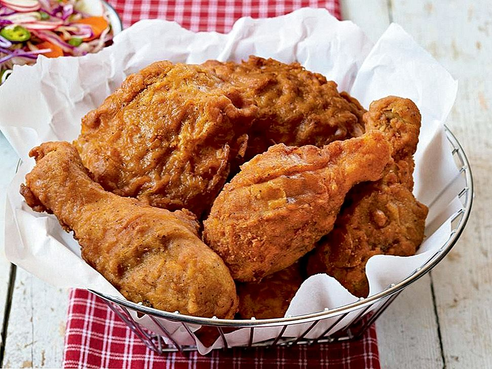

PRAEKANA

Hõõru kanapoolkoivad soolaga kokku ning jäta toatemperatuurile tunniks seisma. Valmista ette kaks kaussi – ühte kaussi lisa jahu, teise kaussi klopi lahti munad, vispelda hulka pett ja Sriracha. Kuumuta õli sügavas potis 160kraadini, võid kasutada ka fritüüri. Õli peab olema nii palju, et kana oleks vähemalt pooleldi õlis. Kui õli on saavutanud õige kuumuse, kasta kana poolkoib jahusse, raputa maha üleliigne, kasta siis petisegusse ja raputa ning veelkord jahusse ja seejärel langeta ettevaatlikult kuuma õlisse. Potis olgu kana ainult üks kiht ja koibadel olgu ka omajagu ruumi. Küpseta 10 minutit – selle ajaga küpseb kana seest kenasti ära ning koorik saab kuldne ja krõbe. Pea meeles, et 160 kraadi on kuumuseks terve küpsetamise vältel! Kui õli ulatub ainult poole koivani, siis keera koibi vahepeal.
Sega kokku maitseõli – selleks kombineeri Cayenne, suhkur, suitsupaprika ja küüslauk. Kohe, kui kuum kanna tuleb potist, aseta see jahutusrestile ning pintselda üle õliga. Jäta natukeseks ajaks ‘tõmbama’.
| Koostisosad |
Kogus |
| Kanakoivad |
1kg |
| Muna |
x2 |
| Petti |
0.5L |
| Sriracha kastet
|
1spl |
| Sool
|
| Nisujahu |
400g |
| Cayenne pipart |
2spl |
| Muscovado suhkrut |
1spl |
| Suitsupaprikat |
0.5tl |
| Küüslauguküüs |
1 |